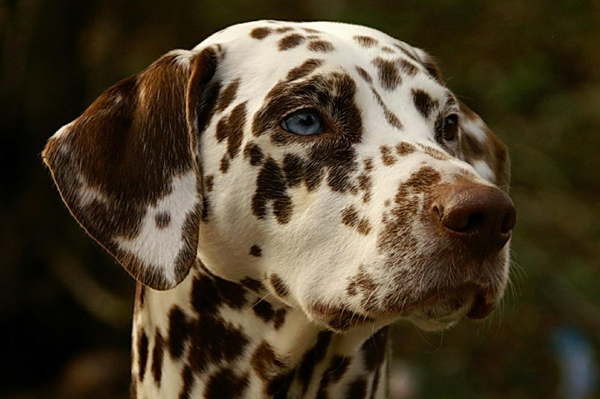

1. Dalmata:
Raza de perro cuya característica distintiva es el pelaje blanco con manchas negras

En esta página encontraremos las palabras más comunes para la letra D
Raza de perro cuya característica distintiva es el pelaje blanco con manchas negras
Mamífero acuático del orden de los cetáceos de dos o tres metros de longitud
: Movimiento rítmico del cuerpo frente a la música o percusiones

Cualquiera de los apéndices en que termina la mano y el pie
Médico especializado en el estudio y tratamiento de las enfermedades de los dientes